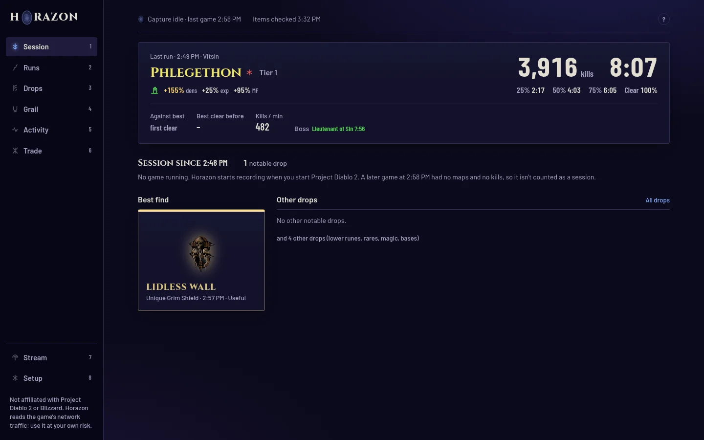

First-time setup
Two things, once, all on the app's Setup page (key 8). After that there is nothing to do but play.
Allow game capture
Windows: the installer already did this.
Linux: on Setup, under Game connection, press Grant permission (or use the tray menu → Grant capture permission…) and enter your password once. It gives a private copy of Python the right to read network traffic; nothing else runs as root.
Capture starts and stops with the game on its own (tray → Start and stop capture with the game).
Connect your stash (recommended)
Items you stash right after picking them up are only seen through your PD2 account's shared stash. Under Stash:
- Log in on projectdiablo2.com in your browser.
- Press F12, open Console and run
localStorage.getItem('pd2-token') - Paste the value into the Token field and save.
What that token is: your login to the PD2 website, so treat it like a password and paste it only into Horazon. Horazon uses it to read your shared stash from PD2's own API and keeps it in the database on your PC; it is sent nowhere else. When it expires, the status strip says so and you paste a new one the same way.
Under Characters, tick the characters whose gear should be checked on the public PD2 armory. That needs no login.
Play
Start the game. The portal in the wordmark and in the tray lights up and turns while Horazon is recording, and the status strip on every page says Recording with your character and where they are. A dim tray portal with an amber ring means the game is running but nothing is being recorded.
The map you are in shows on Session, finished runs under Runs and loot under Drops.


Want to look around first? Setup → Sample data fills the app with a made-up season, and removes it again with one click.